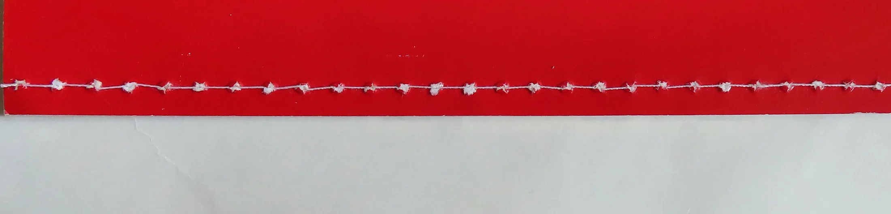
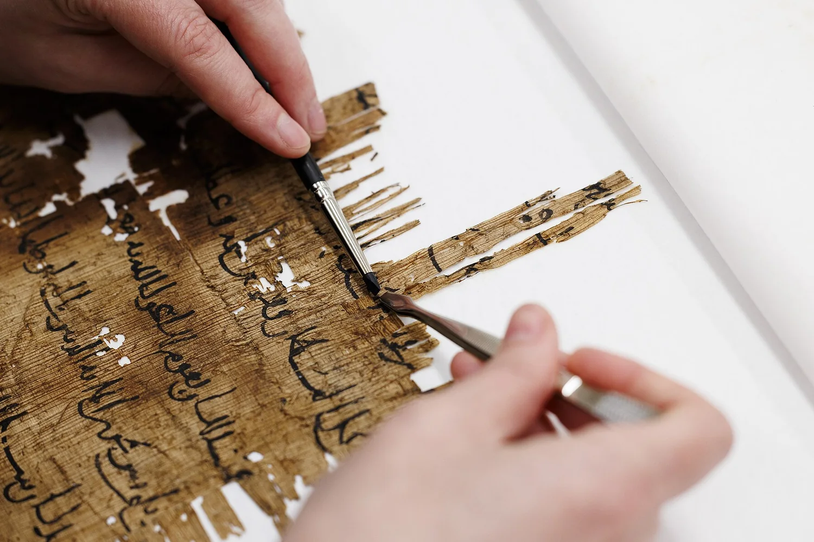
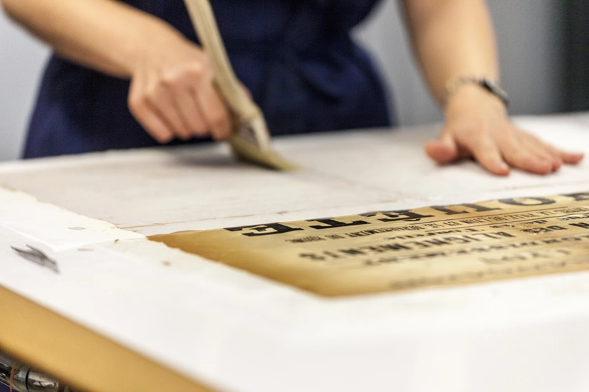

旧书修复没有捷径。纸会脆，线会烂，霉会顺着纤维吃进去；一处下手重了，整本就废了。所以这里只接做得完的活。
四道工序拆开看都不神秘：拆线、补纸、去霉、重装。难的是判断——补纸的 pH 要和原书同档，霉斑深到纤维里就只做钝化不做漂白，线装按原针眼复原、绝不新打孔。这些判断没法外包，也不能中途换手。

从进门到取书，一册线装通常四到六周。急件另议，但不省工序。
拆线、拆封皮，逐帖分开。脆化的纸先做湿度回软，否则一拆就断。
用同年代的手工纸补洞，大面积缺损走纸浆补书机。补上去的纸要和原文同 pH，不然一两年后先发黄的是补的那块。
干式清洁在先，药剂在后。霉斑吃进纤维的只做钝化：漂白过的纸会变脆，那个代价比霉斑大。
线装复原原针眼；西式精装重做书脊衬纸。原来的衬页、藏书印、批注一律保留。

| 类别 | 含 | 起价 |
|---|---|---|
| 单页修补 | 补洞、托裱 | ¥180 |
| 线装整册 | 拆、补、去霉、重装 | ¥1,200 |
| 民国平装 | 含书脊衬纸复原 | ¥2,400 |
| 精装西书 | 含封皮整修 | ¥3,600 |
虫蛀超过三成、或整册粘连成砖的，先做评估再决定接不接。
周二、周五下午在店，其余时间在修复台上，回信会慢一点。
